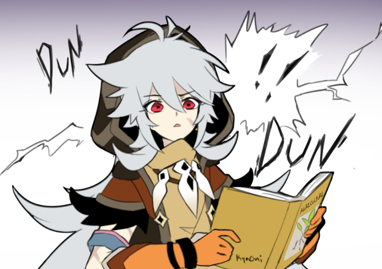
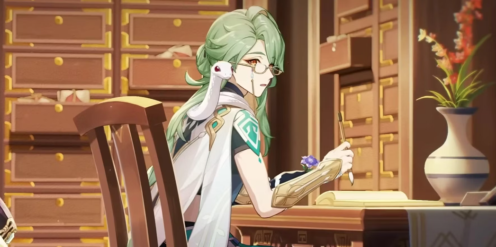
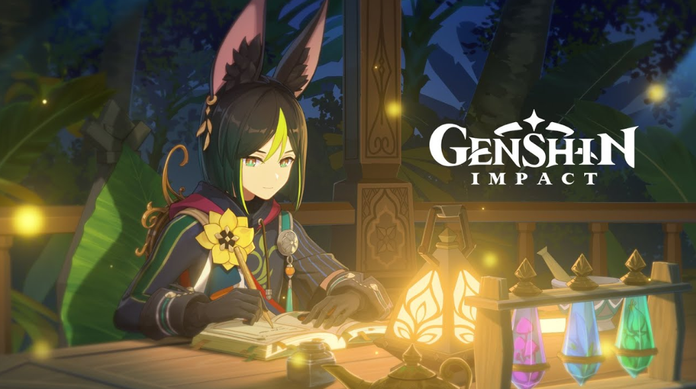

Handwriting in Genshin Impact


Introduction

This is going to be an interpretation of a few of my favorite genshin impact characters handwriting. This is not cannon, its all what I imagine the characeters personal handwriting style would be based off their personality, traits, age, history, etc. The characters mentioned all have very distinct personalites, and I want to refelect that in my interpreation of their writing style. This idea was sprouted from this image, of someone elses interpreation of these characters signatures. I will present the characters given backstory with the font of their own style!

Razor
The story of how Razor got his Vision is one of the few memories that he wishes he could forget.
One day, during a lightning storm, an Abyss Mage ambushed Razor from behind and dragged him away. The wolf pack ran to his aid and put up a fearless fight, but every last one of them was defeated by the Abyss Mage.
As he looked on helplessly at his dear companions being harmed, Razor let out an almighty roar like that of a cornered animal.
"Lupical!"
Fueled by his almighty fury, a lightning-like power grew inside, and suddenly an overload of elemental energy was flowing within him.
He was ready to protect. He was ready to avenge.
He threw off his shackles and raised his weapon.
The Abyss Mage was overwhelmed and defeated by a wild, unfettered frenzy of Electro energy, but this time it was too late to save Razor's wolven companions.
. . .
Though he had obtained a Vision, Razor was still unable to manipulate Electro energy with finesse. One day many moons later, when he met the Witch of Purple Rose, Lisa, he began to study human knowledge.
"Friends, hurt... Never again! I will... protect them."
With each day, Razor grew more skilled in the use of his Vision. He made a silent promise to himself: "I will become stronger. I will become the strongest of them all."
Because the day may come when his Lupical faces another threat, and this time, he will protect them.

Xiao

All adepti are known as the "mighty and illuminated" adepti, and this "illumination" refers to the light of a third "eye" that they possess: a Vision.
But do adepti receive their Visions as a form of acknowledgment from Celestia, like humans do? Xiao no longer remembers the moment he received his Vision. To humans, this would be an unforgettable event. But for him, this was just the beginning of his endless battle. The thing that Xiao truly cannot forget is something different. There are a great many human festivals, and few remember the stories behind them. The greater part of these days coincide with occasions where man-eating monsters were defeated by the adepti host. People imitated their deeds and staged exorcism rituals to remember their ancient heroism, with these practices eventually evolving into celebratory festivals.
The hatred and residual might of many of the gods defeated by Morax throughout Liyue will sometimes erupt with abnormal force amid their half-awake, half-dreaming state. Among them, the eruption that takes place during the Lantern Rite is the most extreme in scale. Xiao has his mission to perform the time-honored "Nuo Dance of Evil Conquering," and so he fights night and day during the Lantern Rite. Thus, he has come to hate it.
Now, Xiao did not consider battle dangerous. It was due to his hard work that Liyue was kept safe. People lit their lanterns, and the blessed lights shone across the night sky and the nearshore.
At that moment, another special feeling blossomed in Xiao's heart. Loneliness? Peace? Or was it his fears for the future? The young-seeming adeptus searched his heart, only to find no answers.

Baizhu
"There's a pharmacy in Liyue called Bubu, and in it is Dr. Baizhu. His skills make all illnesses better, but his medicines are really bitter!"
This nursery rhyme has been widely spread throughout Feiyun Slope, and it has been used by countless parents to warn their children not to get sick... "or else."
However, it seems that the main character of this nursery rhyme is hardly feared by children. Instead, it is with utmost affection that he is called "Mr. Baizhu" by them.
This impression is mostly attributable to Baizhu's gentle and friendly demeanor. Interacting with him is a most refreshing experience. And no matter how anxious the patient may be, his confident smile will never fail to reassure.
Regrettably, Baizhu cannot save all his patients — himself, for example.
Herbalist Gui has mentioned that Baizhu's physical condition is extremely poor, and he often has to go back to his residence to rest after seeing patients. Even so, his smile never falters while in front of people.
When Gui asked him about this, he replied, "If the doctor looks sick himself, how can his patients face their illnesses with confidence?"
Day after day, Baizhu heals his patients. His ever-present smile hides the numerous bitter medicines he takes and the pain he suffers alone.

Tighnari
Academic conferences are unavoidable at the Akademiya, no matter whether one is here to learn or work.
Those at the podium will wax lyrical, and those in the audience will give their support. This sight is most commonplace at such conferences.
But strictly speaking, what researcher, adrift amidst the vast sea of information, will not make mistakes in their investigations?
At one such conference that Tighnari attended, one speaker spoke of things that Tighnari knew to be untrue.
Then, he was just a bystander and a listener. Glancing around his surroundings almost subconsciously, he noticed that neither his classmates nor his teachers had said anything.
What should he do? Perhaps everyone indeed knew what the problem was, but did not want to make the speaker lose face.
Or perhaps he was the only one who had noticed the problem, and his silence now would cause misinformation to spread...
But Tighnari did not hesitate long before steeling himself.
Though both his status and the scene were obstacles in his path, the rigor of knowledge eventually won out.
After all, knowledge was like a star blazing through the night sky. Nothing would divert its path.
So thinking, Tighnari raised his hand—
"My apologies. If I may interject—"
The researcher onstage was at first a bit shocked to hear his gentle voice, but reacted swiftly and invited him to elaborate.
As it turned out, Tighnari had done the right thing.
The speaker, after having processed enough of the information, accepted his corrections earnestly.
And once their exchange had ended, other students and teachers in attendance would also speak in their turn, leading to new research angles opening up for the topics discussed at the conference. Tighnari himself would also receive namecards from some well-known researchers.
Once the whole incident was over, Tighnari would heave a sigh of relief.
That was a fortunate... No, indeed, a joyous thing that those who studied alongside him also accorded knowledge the gravitas it deserved.
But he had not yet counted on something still more fortunate and joyous to occur.
When the meeting ended and Tighnari stood to leave, he heard a crisp, clear "clink!"
—Lo and behold, a Vision rolled off his garments onto the chair below.